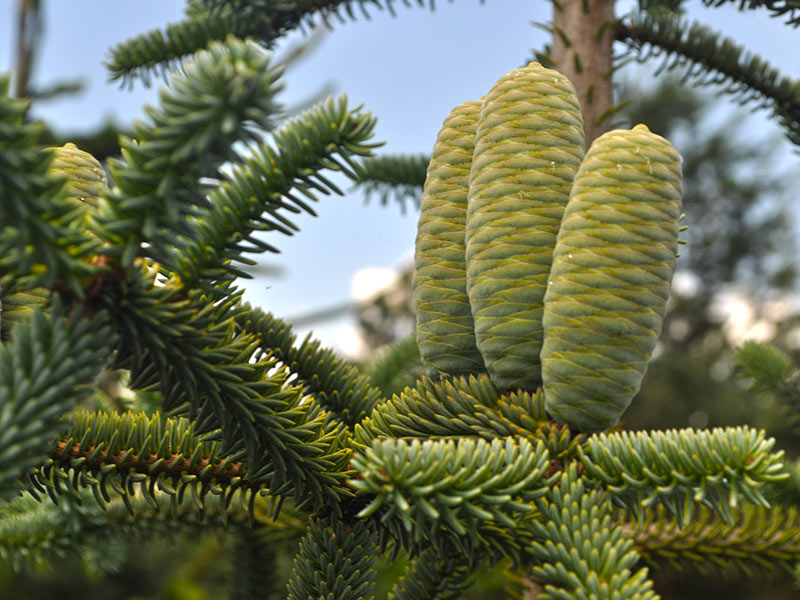
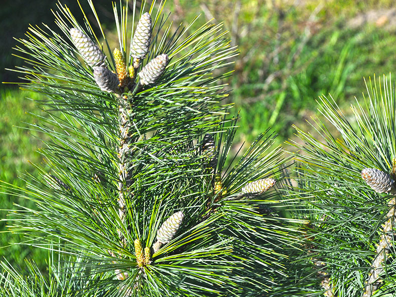
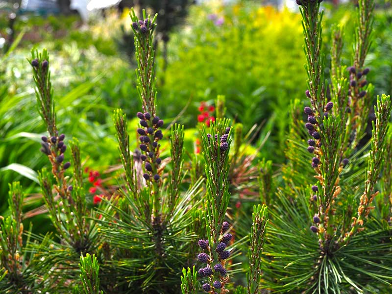
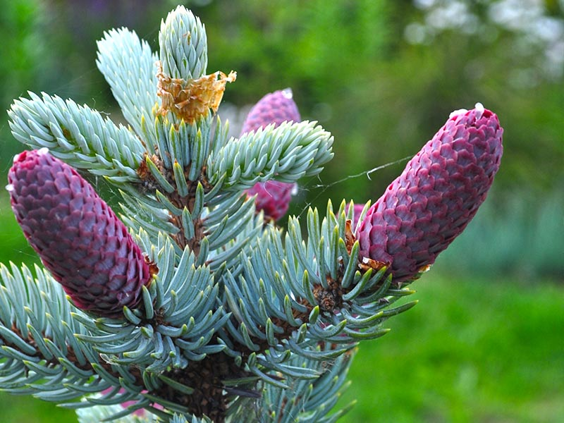
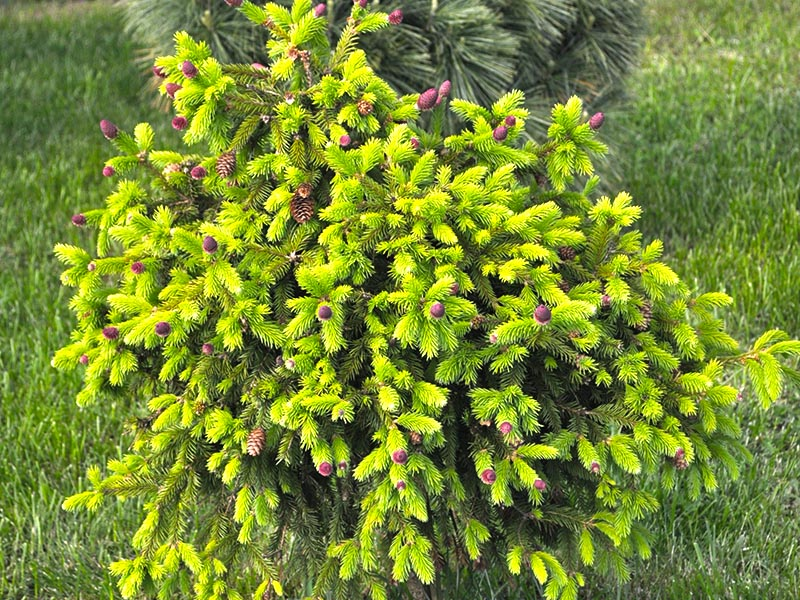
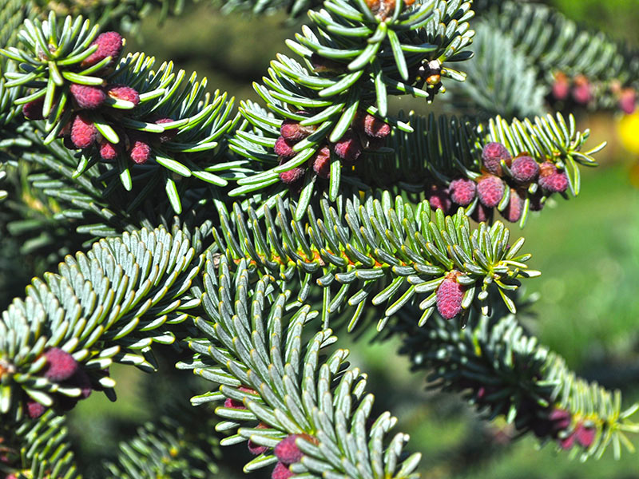

Zróżnicowanie roślin iglastych jest ogromne, nawet w obrębie tylko jednego gatunku jest zaskakujące. Wysokość, barwa i długość igieł oraz pokrój. Iglaki należą do wdzięcznej, dobrze znoszących formowanie i mało wymagającej grupy roślin mogącej zapewnić zieleń w naszym ogrodzie podczas całego roku. Bogaty asortyment pozwoli Państwu bez problemu odnaleźć w naszej szkółce poszukiwany rodzaj iglaka. Formy naturalne, szczepione i formowane spełnią oczekiwania nawet najbardziej wymagających ogrodników, a dobrze dobrane rośliny doskonale uzupełnią każdą rabatę, czy zbudują żywe ogrodzenia wokół posesji.
Jałowiec:
Chiński – w wielu odmianach
Pospolity – w wielu odmianach
Płożący – w wielu odmianach
Pośredni – w wielu odmianach
Skalny – w wielu odmianach
Łuskowy – w wielu odmianach
Tuja (żywotnik):
Zachodni – Smaragd,Golden Smaragd,Yellow Ribbon,Danica,Mirjam,Tiny Tim,Hoseri,Golden Brabant
Olbrzymi – Kórnik, Whipcort
Sosna:
Bośniacka
Górska
Czarna
Żółta
Drobnokwiatowa
Hakowata
Świerk:
Pospolity – Acrocona, Inwersa, Pusch
Biały – Conica, Daisy White, Alberta Globe
Serbski – Pendula, Nana
Kłujący – Białobok, Hopsi, Lucky Stri
Jodła:
Kalifornijska
Kaukaska
Koreańska
Cyprysik:
Lawsona
Ivonne
Nutkajski





